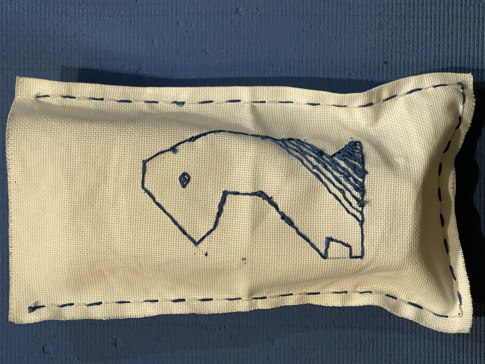
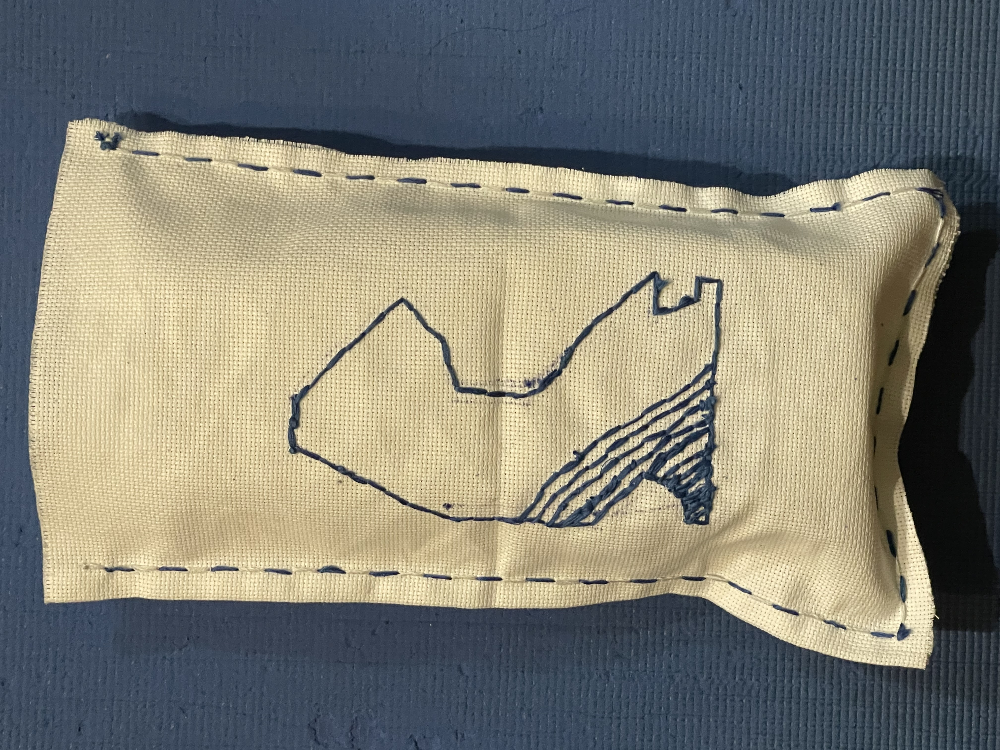

Exhibition of Wonder - Bag with Embroidery
Final Product


While I originally believed that I was fully finished at the end of day 3, Ms. Gismondi recommended that I used the last bit of my blue embroidery floss to do a second running stich around the side of my bag to create an outline, which I did (seen above). While I technically didn't finish my goals as I couldn't fit a wooden chessboard in it, it didn't have straps, and neither of the knights were fully filled in. However, despite these flaws I am still proud of my work and enjoyed the process and still enjoy the product.
[Previous Day]
[Back to Hub]